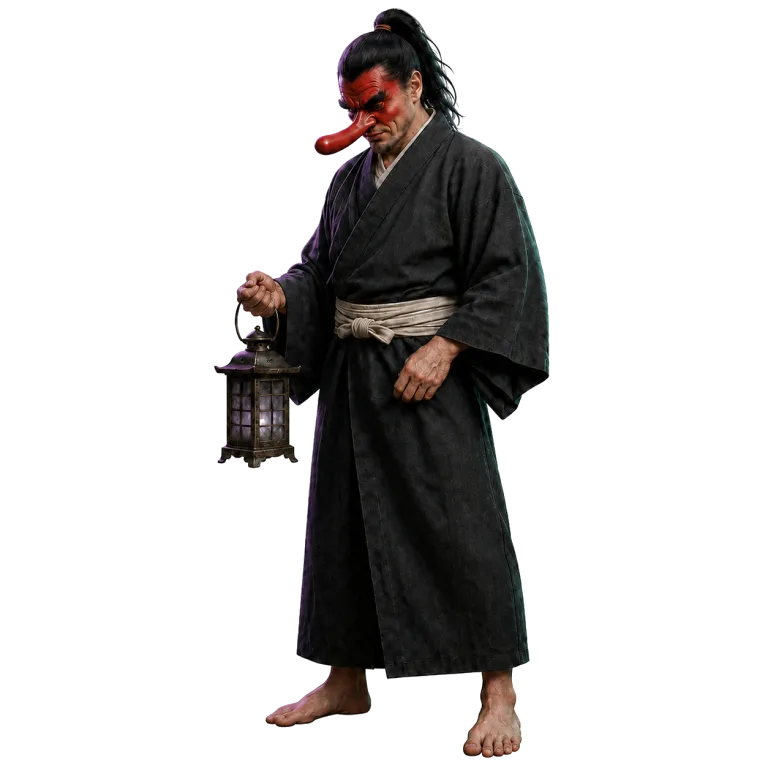

うつろばUtsuroba
Some memories wait for you
to notice them again.消えない 記憶が、また 気づいてもらうのを 待っています。
UTSUROBA IS LOCKED NOW.
うつろばは今、閉じています。
Opening the archive…記録をひらいています…

Some memories wait for you
to notice them again.消えない 記憶が、また 気づいてもらうのを 待っています。